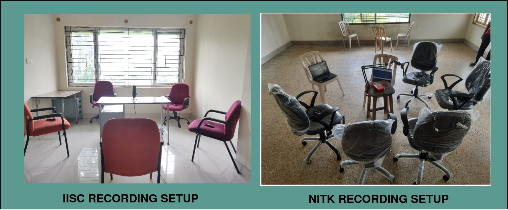

The DISPLACE corpus is a collection of informal conversations, with each conversation lasting between 30 to 60 minutes and involving a group of 3 to 5 participants. In order to participate in the data collection process, individuals were required to provide some meta-information such as their age, gender, education level, native place, mother tongue, languages known, and proficiency in English. Participants selected for data recording were required to have proficiency in at least one Indian language (L1) and English, with an Indian accent. The selection of participants for each conversation was based on their familiarity with Indian languages, and the discussion topics were agreed upon collectively. The topic of conversation was chosen among a diverse set of choices like climate change, culture, politics, sports, entertainment, and more. Prior to each recording session, participants provided written consent and underwent a briefing on the recording guidelines and process. Participants were also compensated monetarily for their time. The DISPLACE corpus comprises roughly 32 hours of conversational data obtained from two academic institutions: IISc and NITK, with the majority of participants being students and staff from these institutions.
AUDIO SPECIFICATIONS
The recordings are single-channel wav files sampled at 16 kHz. Close-talking recordings were time-synchronized with far-field audio and normalized to [-1, 1] amplitude range.
RECORDING SETUP
Each participant was given a lapel microphone to wear, while a shared far-field desktop microphone was positioned at the center of the table. Close-talking audio was recorded using lapel microphones connected to either an audio recorder or an Android phone. Far-field recordings were captured through either an omnidirectional or unidirectional microphone and stored in a laptop using Audacity software. Speakers were positioned in a circular or semi-circular arrangement, maintaining a distance of either 45 cm or 85 cm from the microphone. Close-talking speech was recorded for annotation purposes, while far-field audio data was used for the development and evaluation of the systems.

IISc Recording Setup
The close-talking audio was recorded using a lapel microphone3 connected to an audio recorder4 . Settings of all the audio recorders were kept the same across all the conversations. Far-field recordings at the IISc were conducted using an omnidirectional microphone5 with a circular sitting arrangement (refer Figure 1 (a)).
NITK Recording Setup
The close-talking audio recordings were captured using lapel microphones connected to Android phones. The lapel microphone used at NITK was identical to that used at IISc. All Android phones had the audio recorder app named ASR 6 installed to capture the closed-channel data. Some consistent ASR app settings were applied to all the recordings, including a sampling rate of 16000 Hz, stereo recording turned off, noise cancellation enabled, and the recording format set to WAV. In contrast to the setup at IISc, a unidirectional far-field microphone7 was used in conjunction with a semi-circular seating arrangement at the NITK site. At both recording locations, speakers were positioned at roughly equal distances, ranging from 45 to 60 cm, from each other and the far-field microphone. All recordings consist of single-channel data. The far-field recordings were saved on a laptop using Audacity software, configured with a sampling rate of 16000 Hz and mono-channel settings.
CALL FOR PARTICIPATION
To ensure maximum participation from both IISc and NITK, we displayed posters8 in various public locations like departments and hostels, food-courts, and also shared them across different online platforms. The interested candidates were asked to fill a Google Form9 . This form aimed to gather important information about each candidate, including details like age, gender, educational background, native place (place of origin), native language (mother tongue), languages they are proficient in, and their English proficiency. Additionally, we included a section in the form to inquire about their availability and preferred time slots to facilitate the scheduling of their recording sessions. Based on the Google form responses, participants for a recording were selected by considering their common known languages and their availability time-slots. The selected candidates were contacted to finalize the recording schedule.
GUIDELINES
In order to ensure the consistency and quality of the recorded data, a set of comprehensive guidelines were established. These instructions cover a wide range of factors related to the data collection process, encompassing seating arrangements, standard procedures, and guidance for the participants.
Sitting Arrangement
1. Participants were seated in a semi-circular or circular fashion to facilitate natural and inclusive conversations.
2. A distance of roughly 45-60 cm was maintained between each participant and the far-field microphone, ensuring consistent audio capture.
3. A minimum distance of 45 centimeters was maintained between any two speakers to ensure the target speaker’s speech is much louder in the close-talking recording than the neighboring participants, which helps in the annotation process especially during the speaker overlap cases.
Instructions for Participants
To ensure the privacy and quality of the recorded conversations, participants were provided with
explicit instructions:
1. Participants were instructed to refrain themselves from discussing private entities such as corporations or organizations during their conversations. Personal information, including date of birth and phone numbers, was strictly prohibited from being mentioned during the recordings.
2. Participants were encouraged to converse in both their native language and English, fostering multilingual conversation.
3. Participants were cautioned not to make any alteration to the recording device settings to avoid unintentional disruptions.
4. The lapel microphone was to remain attached to the participant’s collar throughout the entire recording, ensuring consistent audio quality.
5. Android phones (used for recordings) were to be set to airplane mode or ”Do Not Disturb” mode, with internet connectivity turned off, to minimize external disturbances.
6. All participants and recording moderators were instructed to switch their mobile phones to silent or airplane mode to prevent any interruptions during the recording process.
7. The conversation topic was collaboratively chosen by the participants to ensure that everyone could engage actively in the discussion.
8. Before initiating the recording, participants were required to complete a consent form, confirming their willingness to contribute to the dataset and acknowledging receipt of monetary compensation for their involvement.
9. A brief 10-second audio check was performed to ensure each participant’s comprehension of the process and verify the recording quality.
10. The final recording session commenced once all technical and procedural checks were complete, ensuring the data’s integrity and completeness.
11. Towards the end of the time slot, participants were prompted to wrap up their conversation.
12. After completing the recording, participants must handover the audio recorder (or Android phone) to the recording moderator.
General Guidelines
1. Participants were directed to commence recording immediately upon receiving a command, and synchronization was facilitated by the meeting moderators through visual cues provided via placards.
2. Participants were actively encouraged to engage in code-switching between languages during their conversations, enriching the dataset with linguistic diversity. When needed, participants were prompted to incorporate code-switching.
3. Lapel microphones were placed in close proximity to the collar area, and participants were cautioned not to touch or adjust the microphones during recording to avoid any potential audio disruptions.
4. Participants were strongly discouraged from exiting the recording session prematurely to maintain data continuity.
5. The recording sessions began with a synchronized countdown, and participants were required to press the recording button on their Audio recorder (or ASR app) simultaneously, as guided by the moderators. Simultaneously, one of the recording moderators initiated the far-field recording using the Audacity record option.
6. Participants were encouraged to maintain a comfortable posture during the recording.
7. A variety of session compositions were recorded, including all-male, all-female, and mixedgender conversations, enhancing the dataset’s diversity. In mixed-gender conversations, female speakers were strategically positioned in-between male speakers to ease the annotation process.
These comprehensive guidelines were meticulously followed during the data collection process to ensure the reliability and richness of the DISPLACE-2023 dataset.
SPEAKER IDs EXPLAINED
A unique speaker ID with the following format is assigned to individual speaker.
< Gender >_< Recording Location >_< Native Language >_< Unique Identifier >
• Gender: The first field denotes gender of the speaker. It must be either M (for males) or F (for females).
• Native Language: The third field signifies the speaker’s native language, and we utilized the first two letters of the native language name as a symbolic representation. Some of the language codes employed were as follows:
• Unique Identifier: The final field indicates a four-digit number, which serves as a unique identifier assigned to each speaker, beginning with sequential numbering starting at one (i.e., starting from 0001).
Examples: M B Hi 0001 and M M Ka 0001
RECORDING FILE IDs EXPLAINED
A unique file ID is assigned to individual close-talking and far-field recordings.
• Date(YYYYMMDD): The first field signifies the date on which recording was conducted. The date format is year (YYYY), month (MM) and date (DD).
• Time(HHMM): This field denotes the time at which a recording starts. The 24 hour time format is followed with hour(HH) and minutes (MM) sub-fields.
• sessionID: A unique session ID is assigned to individual conversation with the format: < Location >< T hreeDigitNum >. Here, recording site location is represented by Location filed. It can take either ’B’ (for Bengaluru) or ’M’ (for Mangalore) values. A three digit number is used to assign a unique tag to individual recording session. Example: B001, M016, B032, etc.
• OmniUniID: A tag used to denote whether far-field audio is recorded using either omnidirectional (OD) or single-directional (SD) microphone.
• Spoken Languages: The final field indicates the languages spoken by all the speakers during the conversation. For instance, if S1 spoke Malayalam and English, and S2 used Malayalam, Hindi and English, then the spoken language field should contain ’MaHiEn’ value.
Example:
Omnidirectional Microphone File: 20221011 1545 B001 OD En.wav
• Date(YYYYMMDD): Same format as used in the far-field recording ID.
• Time(HHMM): Same format as used in the far-field recording ID.
• Session ID: Same format as used in the far-field recording ID.
• Relative Speaker ID: A relative speaker identification is allocated to each speaker based on their speaking sequence within the conversation. For instance, the speaker who begins the conversation is designated with the label S1. The recording moderators should attentively observe the initial minutes of the conversation to document the order in which the speakers participate.
• Spoken Languages: The final field indicates the languages spoken by the speaker during the conversation. For instance, if S1 spoke Malayalam and English, the spoken language field should contain either an ’MaEn’ or ’EnMa’ entry. Including information about the spoken languages in the file names greatly aids the annotation process.
Examples:
Close talking Mic1: 20221011 1545 B001 S1 En.wav
Close talking Mic2: 20221011 1545 B001 S2 En.wav
Close talking Mic3: 20221011 1545 B001 S3 En.wav
DATA MANAGEMENT
Upon concluding the recording session, all the close-talking audio and far-field data are systematically renamed according to the aforementioned naming conventions and stored in a centralized location. The close-talking recordings are time-aligned with the far-field audio, resampled to 16 kHz, and normalized within the range of [−1, 1]. Additionally, a readme file is created for each conversation, and an example readme file is presented in Figure below. The worn microphone speech was recorded for annotation purposes (for ease of human listening to determine the speech, speaker and language boundaries). All the system development and evaluation is carried out using the far-field microphone recordings.